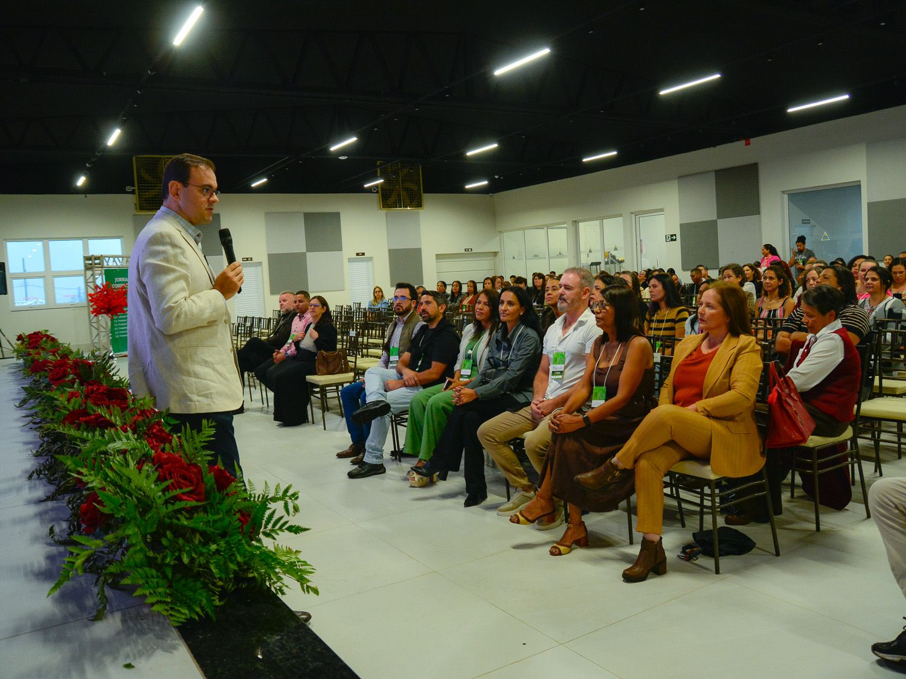

Para quem é
Para quem precisa ser ouvido, e não apenas falar
Timidez, voz que trava, ideias que se perdem no meio da fala ou conversas que viram confronto: tudo isso pode ser trabalhado com método.
Aulas mais claras, envolventes e com escuta da turma.
Reuniões, feedbacks e conversas difíceis com firmeza e cuidado.
Projetos, vendas, eventos e entrevistas.
Seminários, qualificação e defesa de dissertação ou tese.
Fundamentos
Três tradições, uma mesma ideia: a palavra é relação
Da retórica de Aristóteles vem a tríade que sustenta toda boa fala; da Comunicação Não Violenta de Marshall Rosenberg, a escuta que a torna justa; do Ubuntu, a lembrança de que ninguém fala sozinho.
Credibilidade
Quem fala, e com que coerência entre o que diz e o que vive.
Emoção
A disposição do público, os sentimentos e as necessidades em jogo.
Argumento
A estrutura do discurso: clareza, sequência e boas razões.
Formatos
Escolha o percurso
Individual
Percurso personalizado, a partir de um diagnóstico da sua fala e das situações que mais desafiam você. Cada encontro termina com uma prática para a semana.
Quero este formato- 01Diagnóstico e contrato
Sua história com a fala, uma fala espontânea observada e as metas do percurso. - 02Corpo e voz
Postura, gestos, uso do espaço, respiração, ritmo e pausas. - 03Estrutura do discurso
Abertura, sequência de ideias, argumentação e fechamento. - 04Componentes da CNV
Observar sem julgar, nomear sentimentos e necessidades, fazer pedidos claros. - 05CNV em situações difíceis
Feedback, discordância, perguntas hostis e conversas delicadas. - 06Integração
Fala final gravada, devolutiva e plano de prática autônoma.



Investimento
Escolha o formato que atende você
Presencial em Uberaba/MG ou online, pelo Google Meet ou Zoom. Reagendamento sem custo com até 24 horas de antecedência.
Sessão avulsa
por sessão de 1h30
- Diagnóstico da sua comunicação
- Prática orientada com devolutiva
- Exercícios para a semana
Pacote de 6 encontros
6 encontros de 1h30
- Diagnóstico e plano de metas
- Gravação e análise da sua fala
- Material de apoio personalizado
- Certificado de conclusão
Mentoria coletiva
por participante · 10 horas
- Turmas de até 12 participantes
- 5 encontros de 2 horas
- Simulações e feedback entre pares
- Certificado de participação
Programas para equipes de empresas, escolas e universidades: valores sob consulta, conforme a carga horária e o número de participantes.
Perguntas frequentes
Antes de começar
A primeira conversa é para escutar você
Conte o que precisa comunicar melhor e em que situações. A partir daí, montamos o percurso.